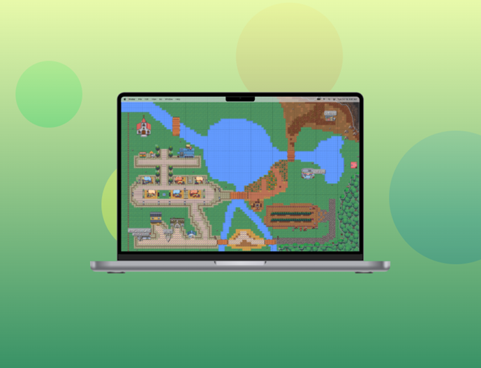

Pykémon

Technologies : Python, Pygame
Type : Jeu d’aventure en 2D
Pykémon est un jeu en 2D développé en équipe, inspiré de Pokémon. Il a été conçu pour se familiariser avec le moteur Pygame et pouvoir monter en compétence en Python, la logique de collision et l’architecture d’un jeu 2D.
Éléments clés :
- Exploration libre d’un monde en pixel art
- Rencontres aléatoires avec des créatures à capturer
- Système de combat tour par tour avec statistiques et niveaux
Mon travail :
- Carte entièrement créée à la main avec le logiciel Tiled
- Création d’une mini-IA pour les personnages non joueurs
- Gestion des assets graphiques et animations des sprites
Ce projet est une vraie plongée dans la programmation orientée objet, la gestion des collisions, les boucles de jeu, et l’organisation collaborative en équipe de développement.
Ce projet est actuellement en cours de développement.